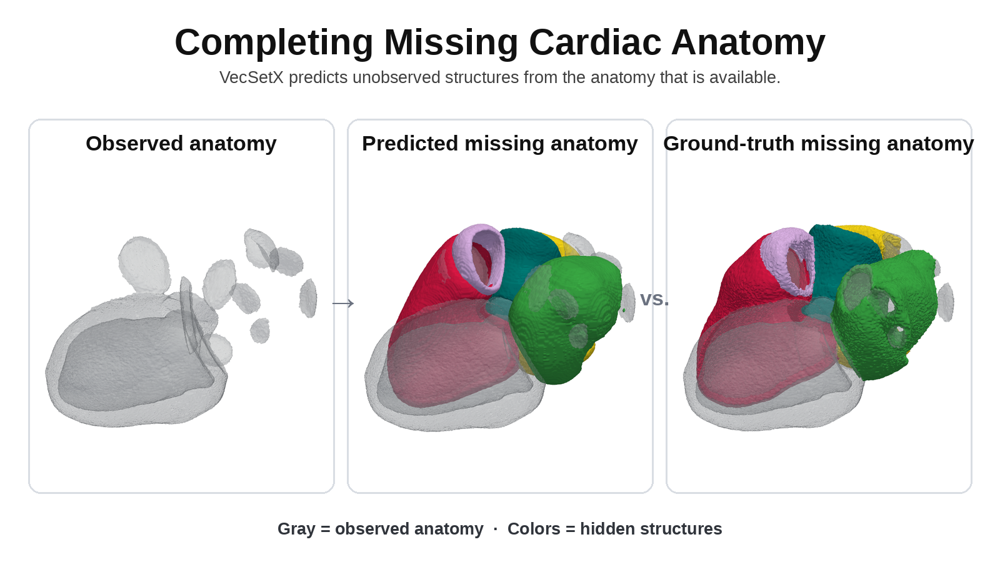

VecSetX
Compositional 3D generation from incomplete supervision

VecSetX studies conditional completion and unconditional generation of anatomical structures, learning from multiple medical imaging datasets with complementary, incomplete annotations.
My work: I extended and fine-tuned a multi-source 3D tokenizer and implemented an experimental conditional diffusion transformer. Through matched and shuffled context controls, I investigated whether the model actually uses the observed anatomy. I also built cross-source and source-holdout evaluations and analyzed geometric failure modes, separating structural consistency from patient-specific accuracy.
The project is being developed into a manuscript for submission to CVPR 2027. I am a co-first author.